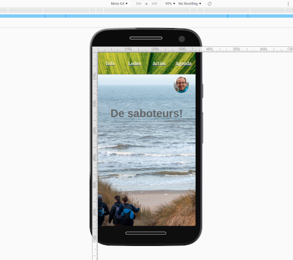
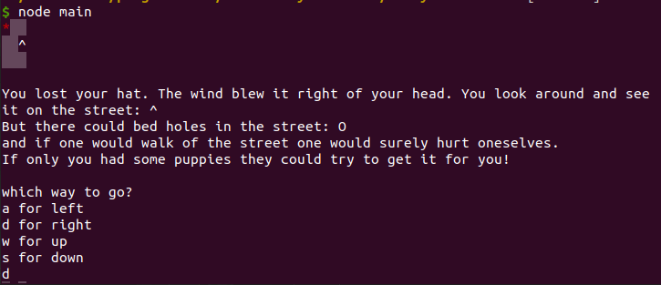
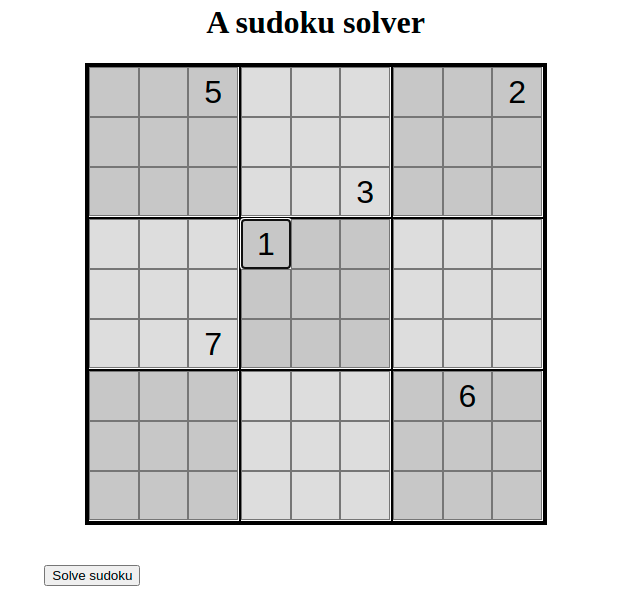

Marcus Brandes
Over mij
Sinds de lente van 2020 ben ik bezig met het leren programmeren. Op deze website vertel ik wat ik tot nu toe gemaakt heb.
Ik werk ook op school als kleutermeester en ik werk in de gehandicaptenzorg op een woongroep voor mensen met een lichte verstandelijke beperking.
Naast programmeren hou ik van wandelen, schaken, zingen en fietsen. Ik woon samen met mijn vriendin in Wageningen.
Fun fact: Bij de kleuters word ik vaker met juf dan met meester aangesproken ;-P
Projecten
Responsive website
Een website gemaakt naar aanleiding van een opdracht van Codecadamy. Het doel was een responsieve website te maken, wat aardig gelukt is.Meer info in de repository

Node game om je hoed terug te halen
Een node spelletje gemaakt naar aanleiding van een opdracht van Codecadamy. Ik heb de originele opdracht uitgebreid met puppies die je vindt en je vervolgens helpen met zoeken. Meer info in de repository 
Sudoku solver
Een website om sudoku's op te lossen. En voor mezelf om te oefenen met het gebruiken van JavaScript om een website in te richten. is.Meer info in de repository
